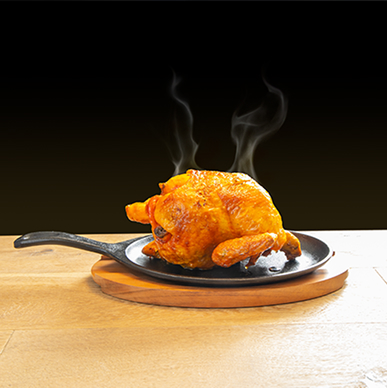

Pollo Patzcuareño
- INGREDIENTES
- -1 pollo entero, limpio, abierto en mariposa de no más 1, 500 gr para la marinada
- -500 ml jugo de naranja agria
- -2 limones (el jugo)
- -4 cucharadas aceite de oliva
- -1 cucharadita sal gruesa
- -1 cucharada pimienta recién molida
- -4 dientes ajo
- -al gusto hierbas de olor (orégano, laurel, tomillo y mejorana)
- -1 cebolla mediana
Lista de ingredientes
Descripción
Esta receta propone preparar un delicioso pollo marinado al carbón, impregnado de sabores gracias a una mezcla licuada de ingredientes que se deja reposar con la carne durante varias horas, idealmente desde el día anterior. El marinado se distribuye cuidadosamente entre la piel y la carne para intensificar su sabor. Una vez listo el fuego y las brasas, el pollo se cocina lentamente sobre la parrilla, con la piel hacia abajo, protegido con una tapa o papel aluminio para conservar la humedad y el calor. Durante la cocción, se pincela con la marinada para mantenerlo jugoso y sabroso. Después de dorarse de un lado, se voltea con cuidado y se termina de asar hasta que los jugos internos sean claros, señal de que está bien cocido. Finalmente, se corta en piezas y se sirve acompañado de tortillas, salsas, frijoles de la olla y una ensalada fresca de lechugas, creando una comida completa y llena de sabor campestre.